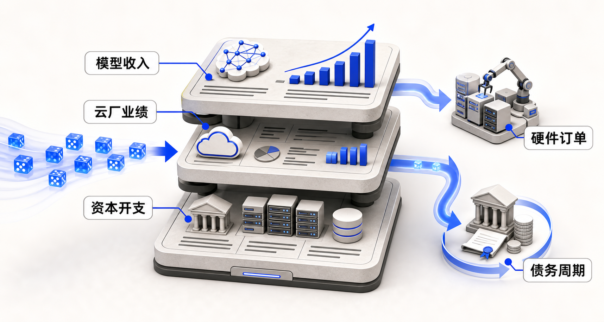
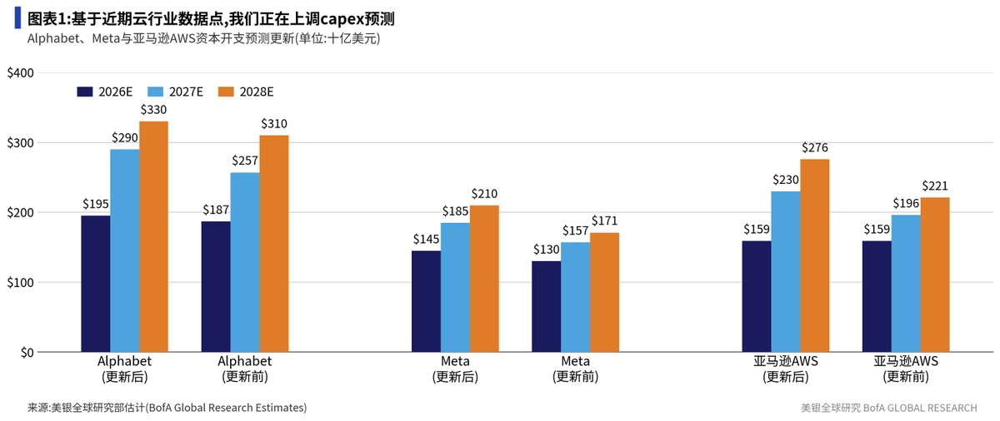
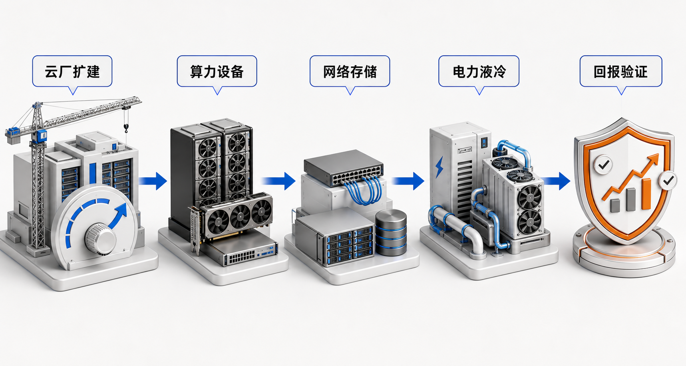
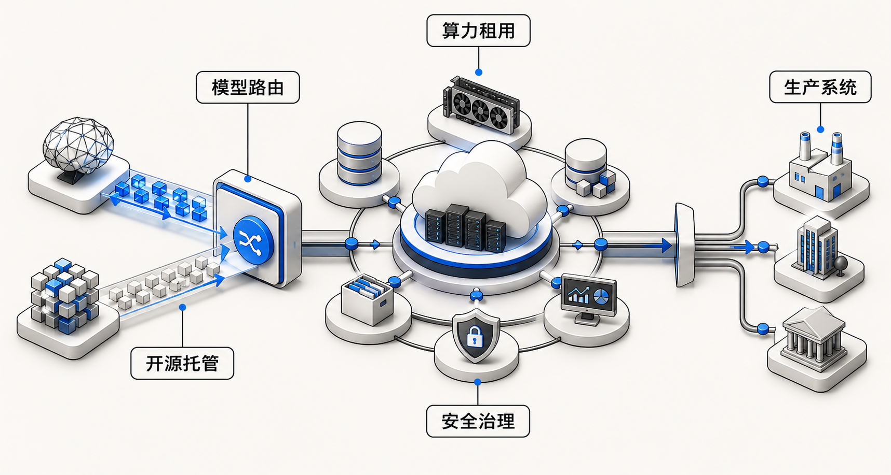
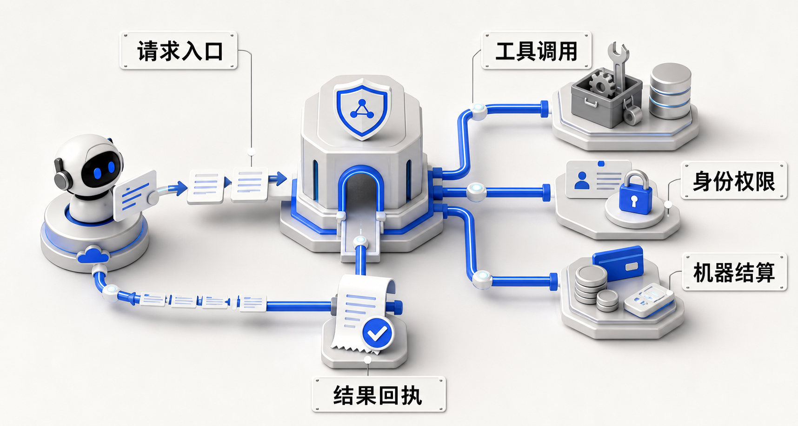

一套新的 AI 商业化定价框架：从硬件订单走向收入验证
今年上半年，二级市场最直接交易的是硬件链：GPU、AI 服务器、光模块、交换机、电力、液冷和数据中心。
这一交易路径有现实约束：OpenAI、Anthropic 尚未上市，模型层无法被二级市场直接定价。投资者只能通过云厂 CapEx、供应链订单和数据中心建设来表达对 AI 需求的预期。
硬件订单只是第一阶段。Anthropic 的盈利样本验证高价值 token 的付费能力；BofA 上调 CapEx 显示云厂扩建周期仍在延续；SemiAnalysis 的债务框架则提示 AI 基建正在进入资产负债表扩张。
因此，下一阶段 AI 商业化需要同时看三张表：模型利润表、云厂收入与资本开支表、AI 基建资产负债表。

一、数据锚点：收入、利润与 CapEx 已开始相互验证
AI 商业化不能只停留在逻辑判断。更重要的跟踪线索，是模型利润、云收入增速、客户合同、资本开支和自由现金流之间能否闭环。
现阶段的数据可以分为三类：已披露财报、媒体或研究机构披露的模型预测、市场 preview 口径。三类数据可信度不同，但共同指向同一个问题：AI CapEx 是否正在转化为可持续收入。
| 对象 | 最新数据锚点 | 口径 | 对本文框架的意义 |
|---|---|---|---|
| Anthropic | 据 SemiAnalysis 2026 年 7 月 8 日付费报告公开页，Anthropic 与 OpenAI 合计 ARR 约 1000 亿美元；市场摘要称 SemiAnalysis 预测 Anthropic 3Q26 GAAP 营业利润超过 10 亿美元，利润率约 6%。 | 研究模型预测，非官方财报 | 验证高价值 token 具备付费能力，但二级市场只能间接交易云厂和供应链映射。 |
| AWS | 2026 年一季度 AWS 收入 376 亿美元，同比增长 28%；经营利润约 142 亿美元。同期 Amazon 资本开支约 432 亿美元，全年 CapEx 计划约 2000 亿美元，主要投向 AI 基础设施。 | 公司财报与媒体转述 | 云收入已加速，但 CapEx 增速仍高于收入增速，自由现金流和折旧是估值约束。 |
| Google Cloud | 2026 年一季度收入 200 亿美元，同比增长 63%；cloud backlog 超过 4600 亿美元。Alphabet 将 2026 年 CapEx 指引上调至 1800-1900 亿美元。 | 公司财报与媒体转述 | Google Cloud 是“AI 云收入兑现”的强证据，backlog 提供后续收入可见度。 |
| 阿里云 | 2026 年 1-3 月云智能集团收入 416 亿元，同比增长 38%。1QFY27 preview 口径显示，Jun Q 云收入预计增长 45%，高于市场预期的 40%；margin 预计 11-12%，长期目标 20%。 | 前一季度已披露财报 + 市场 preview | 中国 CSP 的 AI 云也开始进入收入加速和利润率改善同步验证阶段。 |
| Cloudflare | 2026 年一季度收入 6.398 亿美元，同比增长 34%。Q4 2025 Pool of Funds 合同占新增 ACV 的 20%，新 ACV 预订同比增长近 50%，Workers 平台活跃开发者超过 450 万。 | 公司财报与媒体转述 | 规模小于 hyperscalers，但更直接映射 Agent、边缘执行、SASE、使用量计费和 AI 流量入口。 |
阿里 1QFY27 preview 拆解
阿里这份 preview 的价值在于横向对比：集团收入和国内消费业务并不强，真正超预期来自云和 AI。
| 业务线 | preview 口径 | 研究含义 |
|---|---|---|
| 集团 | 收入预计同比增长 9%；EBITA 约 260 亿元，高于一致预期约 240 亿元。 | 整体利润略好于预期，但不是由传统电商强复苏驱动。 |
| 电商 | Jun Q CMR 预计下降 7-8%；旧口径剔除商家补贴影响后增长 1-2%。电商 EBITA 预计下降 3-4%。 | 内需部分一般，平台通过补贴效率和费用控制改善利润表现。 |
| 云与 AI | Jun Q 云收入预计增长 45%，高于市场预期的 40%；margin 预计 11-12%，长期目标 20%。 | 核心超预期来源，MaaS 占比提升和自研平头哥芯片可能改善成本结构。 |
| 即时零售 | Jun Q 亏损预计收窄至约 100 亿元，低于 Mar Q 约 180 亿元亏损。 | 闪购亏损低于预期，降低对集团利润的拖累。 |
| 其他业务 | 亏损预计约 170 亿元，低于 Mar Q 约 210 亿元亏损，基本符合预期。 | 后续重点看 Qwen APP 与 training cost 披露，透明度提升有助于重估云 AI 投入回报。 |
这些数据的重点不是比较绝对规模，而是识别验证顺序。模型层先证明高价值任务能付费；云厂用收入和 backlog 证明需求进入生产系统；Cloudflare 这类边缘平台则观察 Agent 流量能否形成新的使用量收入。
二、模型层：需求验证，高价值 token 已出现盈利样本
SemiAnalysis 在 2026 年 7 月 8 日发布的付费报告《Anthropic 3Q26 Profit Over $1B》，重新提高了市场对模型层盈利能力的关注。
据公开页与市场摘要，该报告基于 Tokenomics 模型，预测 Anthropic 2026 年第三季度 GAAP 营业利润超过 10 亿美元，利润率约 6%。主要驱动包括 token 处理量增长、Claude Code 在软件开发场景的采用，以及 B2B 定价能力。
这组预测的重点不在单季利润精确值，而在方向。顶级闭源模型不再只是高投入研发项目，而可能在代码、工程和企业自动化等高价值场景中形成利润。
| 观察点 | 含义 | 股价映射 |
|---|---|---|
| Anthropic 盈利预期 | 前沿闭源模型在 B2B 高价值场景存在定价权 | 提升 AI 商业化信心，利好云厂和算力链需求预期 |
| Claude Code 增长 | 代码与工程场景是最早兑现的高价值用例之一 | 开发工具、企业软件面临重估与替代压力并存 |
| 未上市状态 | OpenAI、Anthropic 难以直接在二级市场交易 | 二级市场更容易交易其云平台、芯片和基础设施供应链 |
三、采用方式：企业 AI 使用进入多模型架构
Coinbase 通过模型路由、开源模型、缓存命中率提升和上下文精简来降低 AI 支出。微软上线自研 MAI 模型，主要覆盖高频、低复杂度、高体积任务。
这些案例指向同一趋势：企业不是减少 AI 使用，而是通过工程优化降低单位成本，扩大使用规模。
复杂推理、代码、金融分析、科研、Agent 高阶任务继续使用 Claude、GPT、Gemini 等前沿闭源模型。
高价 token 高准确率摘要、分类、客服、检索增强、内部流程自动化会更多转向开源模型、小模型和 CSP 自研模型。
低成本 token 规模化推理这意味着闭源模型不会吃掉企业所有 AI 预算。前沿模型继续站在能力上限，但大量中低价值任务的价值会流向开源模型、自研模型和 CSP 工程层。
四、硬件链：CapEx 上修先传导到订单
BofA Global Research 图表显示，美银上调 Alphabet、Meta 与 Amazon AWS 的资本开支预测。按图中口径，2028 年三者合计 CapEx 从 7020 亿美元上调至 8160 亿美元，2026 年基本未动，2027-2028 年上修更明显。

这不是收入确认，而是建设强度指标。它说明 hyperscalers 对 AI 数据中心、GPU/ASIC、服务器、存储、交换机、电力和冷却的需求预期继续上修。
短期看，CapEx 上修最先反映在硬件供应链；中期看，云厂需要证明这些投入能够转化为云收入、利润率和自由现金流。

| 受益环节 | 代表资产 | 股价验证点 |
|---|---|---|
| GPU / ASIC | NVIDIA、AMD、Broadcom | 订单能见度、供给约束、ASP、客户集中度 |
| 服务器与整机柜 | 浪潮信息、中科曙光、海外 ODM | AI 服务器占比、毛利率、交付节奏、回款质量 |
| 网络与光模块 | 交换机、CPO、光模块、网络芯片 | 800G/1.6T 渗透率、数据中心网络升级节奏 |
| 电力与液冷 | 变压器、配电、液冷、IDC | 电力瓶颈、建设周期、客户锁定、资产回报率 |
4.1 债务融资：订单弹性与尾部风险同步放大
SemiAnalysis 另一篇报告《Nvidia GPU Debt Backstop Unleashes the AI Project Trinity》将问题推进到融资层。
据公开摘要，其核心观点是 AI 建设正在从现金流驱动转向债务融资驱动。报告预计，2029 年全球 AI 相关债务可能超过 7 万亿美元，2024-2029 年累计 AI CapEx 约 11.1 万亿美元。
NVIDIA 的角色也可能从 GPU 供应商，延伸为 AI 算力信用体系的关键节点。若其通过 backstop、take-or-pay、最低收入保证等方式支持 Neocloud 融资，短期会扩大需求，长期也会加深自身信用与 AI 债务链的绑定。
Neocloud 需要低成本融资，才能采购 GPU、租赁数据中心和建设算力集群。
take-or-pay 和收入保证让 GPU 集群更像可融资资产，但也把利用率风险显性化。
电力、土地、冷却、网络和交付周期决定 AI 债务能否转化为可运营资产。
五、CSP：从硬件订单进入收入验证
市场此前担心 CSP 只是转售算力和模型 token，承担巨额 CapEx，却未必捕获足够利润。多模型架构正在改变这一判断。
在企业生产环境中，CSP 不只获取闭源模型 API 分成，还承接模型托管、数据存储、权限治理、监控运维和算力租用等全栈云消费。
因此，CSP 的股价验证不能只看 CapEx 上修，还要同步看云收入增速、backlog、MaaS 占比、经营利润率、折旧压力和自由现金流。AWS、Google Cloud 与阿里云的最新数据，已经把分析重点从“是否投入”推向“投入能否变现”。

| CSP 收入层 | 具体内容 | 投资含义 |
|---|---|---|
| 模型层 | 闭源 API、开源模型托管、自研模型推理 | 模型降价未必压缩 CSP，可能扩大推理总量 |
| 数据层 | 对象存储、数据库、数据仓库、向量检索 | AI 负载越贴近企业数据，云消费越容易沉淀 |
| 运维治理层 | Kubernetes、MLOps、安全、权限、审计、监控 | 企业真正付费的是可靠生产系统，不只是模型能力 |
| 算力层 | GPU、TPU、ASIC、私有化部署、推理集群 | 短期压 FCF，长期看利用率、折旧和 ROIC |
5.1 Agent 交易层：CSP 价值继续外延
如果第一阶段 CSP 赚训练和推理算力，第二阶段赚企业 AI 工程化，那么 Agent 时代对应第三层价值：机器请求、身份授权与自动结算。
未来 AI Agent 不只调用模型，还会调用 API、网页、数据库、企业系统、支付系统和交易平台。
MCP、A2A、x402、AP2 等协议本身不对应直接投资标的，但会把价值引向掌握基础设施的公司：Cloudflare、AWS、Microsoft、Google，以及 Visa、Mastercard、PayPal、Stripe、支付宝、微信支付等支付清算层。

| 层级 | 观察对象 | 股票映射 |
|---|---|---|
| 请求入口 | ChatGPT Apps SDK、MCP、企业 Agent 入口 | OpenAI 未上市；Microsoft、Google 间接受益 |
| 边缘网关 | Cloudflare Agents、MCP、x402、WAF、Bot 管理 | Cloudflare 是 Agent 请求收费网关候选，弹性大但标准尚早 |
| 云原生基础设施 | AWS、Azure、GCP 的 IAM、API Gateway、模型托管和企业数据层 | Amazon、Microsoft、Alphabet 的长期重估逻辑 |
| 支付清算 | AP2、x402、银行卡网络、钱包、风控 | Visa、Mastercard、PayPal、支付宝、微信支付 |
六、股价映射：不同阶段对应不同资产
这轮 AI 商业化不是单一利好，而是一条从模型收入、云厂 CapEx、硬件订单、债务融资到折旧回报的股价传导链。
不同环节的反应顺序不同，验证指标也不同。
| 阶段 | 市场交易什么 | 主要受益方向 | 核心风险 |
|---|---|---|---|
| 第一阶段 | 模型收入爆发 | Anthropic/OpenAI 生态、云厂、推理算力 | 模型降价、开源分流、财务披露不确定 |
| 第二阶段 | CapEx 上修 | GPU、服务器、光模块、交换机、电力、液冷 | 订单透支、毛利率下滑、客户议价 |
| 第三阶段 | 云收入兑现 | AWS、Azure、Google Cloud、阿里云、腾讯云 | 折旧压力、FCF 被压、价格战、preview 不及预期 |
| 第四阶段 | AI 债务扩张 | NVIDIA、Neocloud、IDC、融资链 | 利用率不足、租赁价格下跌、债务风险 |
| 第五阶段 | Agent 交易层 | Cloudflare、AWS、支付网络、企业 IAM | 协议标准不确定、监管、安全漏洞 |
配置含义：从满仓硬件链，降到 AI 主线多桶配置
当前不应从 AI 主线撤退，但也不宜继续把组合集中在单一硬件链。更合理的调整，是从“满仓硬件订单弹性”降到“AI 主线多桶配置”。
原因在于，市场已经开始交易一个新的风险点：AI 硬件链涨幅较快，但云厂和 AI 买单方的股价、现金流回报尚未同步验证。JPMorgan 将这种分化类比为 1999 年前后的设备商与资本开支方分化；UBS 也指出 AI infrastructure 的回报预期已经明显压过 hyperscalers；BofA 则提示，大厂 AI CapEx 持续上修会让市场更关注折旧、融资和回报压力。
| 方向 | 建议仓位 | 配置逻辑 |
|---|---|---|
| AI 硬件链核心 | 45-55% | 仍是最强主线，但从满仓降下来，只保留最强瓶颈环节。 |
| CSP / 云收入验证 | 20-25% | 从“谁卖设备”转向“谁把 AI 变成收入、利润和 ROIC”。 |
| 存储、内存、电力、液冷、IDC | 10-15% | 属于硬件链第二层，但比纯服务器更偏瓶颈，也更能承接 CapEx 扩散。 |
| Agent 基础设施 / 支付 / 边缘云 | 5-10% | Cloudflare、支付网络、API、身份和结算层，属于中期选择权。 |
| 现金或低波动资产 | 10-15% | 为 AI 硬件链回撤时的再平衡保留资金。 |
A 股映射：按 CSP CapEx 传导链分层
A 股不能只看服务器和云网安。若以 CSP 资本开支为主线，传导链应从云厂需求、算力硬件、存储内存、网络互联、PCB、半导体设备、电力液冷和 IDC 一起观察。
| 环节 | 代表公司 | 与 CSP 的关系 | 观察重点 |
|---|---|---|---|
| 云厂与运营商 | 阿里巴巴、腾讯控股、中国移动、中国电信、中国联通 | 直接承接模型服务、MaaS、云主机、IDC 和政企 AI 云需求 | 云收入增速、AI 收入占比、CapEx 强度、折旧、云利润率 |
| AI 服务器与整机柜 | 浪潮信息、工业富联、中科曙光、神州数码、紫光股份 | 给云厂、互联网、运营商和政企数据中心交付服务器、整机柜和系统集成 | AI 服务器订单、整机柜占比、毛利率、客户集中度、海外限制 |
| 国产算力芯片 | 寒武纪、海光信息、景嘉微、龙芯中科 | 在国产替代、政企私有化和特定行业算力中心中替代部分 GPU/CPU 需求 | 适配生态、客户认证、集群稳定性、软件栈、真实出货和收入确认 |
| 存储与内存链 | 兆易创新、澜起科技、聚辰股份、佰维存储、江波龙、香农芯创 | AI 服务器需要更高容量 DRAM、SSD、模组、内存接口芯片和供应链配套 | DDR5 渗透、HBM 外溢、企业级 SSD、库存周期、价格弹性 |
| 光模块与网络互联 | 中际旭创、新易盛、天孚通信、光迅科技、紫光股份、锐捷网络 | 训练集群和推理集群需要高速东西向流量，网络升级是 CSP 扩建刚需 | 800G/1.6T 渗透率、交换机升级、客户认证、价格年降、产能爬坡 |
| PCB 与高速连接 | 沪电股份、深南电路、胜宏科技、生益电子、沃尔核材、兆龙互连 | AI 服务器、交换机、加速卡和高速背板提升 PCB 层数、材料和连接器要求 | AI PCB 占比、高频高速材料、良率、海外客户、单机价值量提升 |
| 半导体设备与材料 | 北方华创、中微公司、拓荆科技、华海清科、盛美上海、芯源微 | 国产算力、存储和先进封装扩产，向上游设备材料传导 | 订单能见度、国产替代率、先进制程/存储/封装设备兑现、交付周期 |
| 电力与液冷 | 英维克、申菱环境、高澜股份、同飞股份、科士达、科华数据、金盘科技 | 高功耗机柜推升制冷、UPS、配电、变压器和微模块数据中心需求 | 液冷渗透率、单机柜功率密度、数据中心电力瓶颈、项目回款 |
| IDC 与算力租赁 | 润泽科技、数据港、光环新网、奥飞数据、宝信软件 | 承接机柜、电力、网络和算力租赁需求，是 CSP 与 Neocloud 的资产底座 | 上架率、PUE、电力指标、客户锁定、折旧压力、租赁价格 |
结论：AI 商业化真正的分水岭，是谁能把算力支出变成可持续利润
Anthropic 的盈利预期验证高价值 token 的商业化潜力。AWS、Google Cloud 与阿里云的收入加速，说明 AI 需求正在进入云厂收入表。BofA CapEx 上修与 SemiAnalysis 的 AI 债务框架，则提示产业正在进入更高强度的资产负债表扩张。
Agent 协议和支付层进一步把 CSP 与边缘基础设施的价值，延伸到机器请求和交易清算。
这四件事合起来，构成新的 AI 商业化定价框架：模型公司决定能力上限，CSP 决定规模化落地，硬件链承接 CapEx，金融结构放大周期，Agent 交易层决定下一代互联网基础设施入口。
资料来源与口径
- SemiAnalysis：Anthropic 3Q26 Profit Over $1B，公开页可见标题与摘要，完整模型为付费内容。
- SemiAnalysis：Nvidia GPU Debt Backstop Unleashes the AI Project Trinity，公开页可见标题，详细债务模型为付费内容。
- BofA Global Research Estimates：Alphabet、Meta、Amazon AWS CapEx 预测更新图表。
- Business Insider：Amazon Q1 2026 earnings recap，用于 AWS 收入增速与 CapEx 数据。
- Business Insider：JPMorgan warning on AI hardware and hyperscaler divergence，用于 AI 硬件链与 hyperscaler 表现分化讨论。
- MarketWatch：UBS on AI infrastructure stocks versus hyperscalers，用于 AI infrastructure 回报预期与 hyperscaler 对比。
- Barron's：BofA warning on Big Tech AI spending，用于 hyperscaler CapEx 上修与回报压力讨论。
- Investopedia：How Amazon Makes Money，用于 AWS 经营利润和分部贡献数据。
- WSJ：Google Profit Jumps as Cloud Business Booms，用于 Google Cloud 收入、backlog 与 CapEx 指引数据。
- AP News：Alibaba reports 38% jump in AI and cloud revenue，用于阿里云 2026 年 1-3 月收入数据。
- 阿里巴巴 1QFY27 preview：用于 Jun Q 云收入、margin、集团 EBITA 与即时零售亏损预测；该口径为市场预览，非公司已披露正式财报。
- Tom's Hardware：Cloudflare Q1 2026 revenue and AI usage，用于 Cloudflare 2026 年一季度收入与 AI 使用量数据。
- Investor's Business Daily：Cloudflare revenue model shift，用于 Pool of Funds、ACV、AI 客户合同与 Workers 开发者数据。
- Cloudflare Agents MCP 文档，用于 Agent 基础设施与 MCP 讨论。
- Cloudflare Agentic Payments 文档，用于 x402/机器支付层讨论。
- OpenAI Apps SDK 公告，用于 ChatGPT Apps 与 MCP 入口讨论。
本文为研究型框架梳理，不构成投资建议。涉及未上市公司、付费报告、推文和模型推演的数据，均需以后续正式财报、监管文件、公司披露和可验证订单为准。